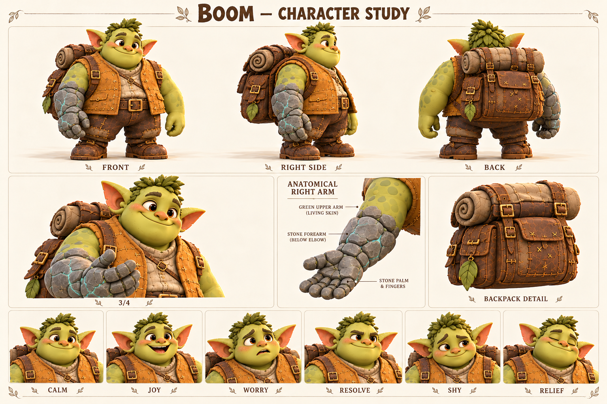

Чего хочет
Оставаться полезным другом и помочь Пятнышку освоиться с новым телом.
Способен удержать тяжёлое и учится не держать все трудности в одиночку.
Взрослый широкоплечий друг команды; каменная правая кисть и предплечье — след спасения Пятнышка.

Широкий силуэт; охристый жилет; большой рюкзак; правая каменная кисть и предплечье.
Палитра: Охра / мох / речной серый / тонкие бирюзовые прожилки.
Бум привык помогать там, где важны терпение и надёжность: перенести доски, придержать дверь мастерской, дождаться, пока застынет клей. Другие замечали его силу раньше аккуратности, поэтому он особенно берёг маленькие вещи. В рюкзаке всегда находилось место для мягкой подкладки, лишнего ремешка и чужой забытой чашки. Он не медленно думает — ему удобнее понятная задача, чем длинное объяснение сразу обо всём.
В рабочей будущей истории маленькая Пятнышко соскользнула в волшебную реку. Когда панцирь начал тяжелеть, Бум лёг на берег и потянулся правой рукой. Он не разжал ладонь, пока не вытащил её. Магия успела превратить кисть и предплечье в камень, но на суше изменение остановилось. Пятнышко осталась живой, а Бум — подвижным. Тонкие минеральные прожилки на обоих стали общей отметиной пережитого; история не требует изображать боль или насилие.
После этого ему пришлось заново привыкать к весу руки и осторожному захвату. Сначала он прятал неловкость, чтобы друзья не тревожились, но быстро понял: чашку проще попросить подержать, чем разбить из упрямства. В актуальном демо он доходит с командой до перевала; подробный рассказ о реке оставлен будущей главе. Его важный поступок не должен превращать каждую реплику в рассказ о собственном подвиге.
Оставаться полезным другом и помочь Пятнышку освоиться с новым телом.
Принимать помощь без ощущения, что тем самым разочаровал остальных.
Нечаянно повредить хрупкое или стать для друзей только носильщиком.
Молча берёт слишком много и скрывает неудобство, пока оно не мешает делу.
Терпение, точность после тренировки, спокойствие и способность держать обещание.
Самая тяжёлая рука в компании принадлежит самому бережному герою.
Темп и ритм. Неспешно, коротко и конкретно; пауза означает выбор слов, а не отсутствие мысли.
Слова и построение фразы. Держать, ровно, вместе, удобно, подожду. Один ясный вопрос за раз.
Юмор. Мягкая буквальность и контраст большого тела с маленькой заботой.
Под давлением. Говорит ещё короче; вместо громкого крика сначала обозначает действие.
Как проявляет заботу. Спрашивает, как удобнее помочь, а не решает за другого.
Чего избегать. Никаких шуток про глупость, детской речи, вечного голода и агрессии каменным кулаком.
| Ситуация | Реплика или действие |
|---|---|
| Предложение | Подержать ровно или просто не отпускать? |
| Пятнышку | Я рядом. Давай сначала одну лапу. |
| Ошибка | Слишком крепко взял. Попробую мягче. |
| Просьба | Эту застёжку мне пока трудно. Поможешь? |
| Опасность | Отойди на сухое. Я держу. |
| Юмор | Цветок маленький. Значит, держать надо внимательнее. |
| Подпись на листе | Состояние | Актёрская задача |
|---|---|---|
| CALM | Спокойствие | Небольшая улыбка, открытая зелёная ладонь. |
| JOY | Радость | Щёки поднимаются, смех всем корпусом, без сильного раскачивания камеры. |
| WORRY | Тревога | Брови вверх у переносицы; каменная рука остаётся устойчивой. |
| RESOLVE | Решимость | Мягкость лица сохраняется, взгляд прямо на задачу. |
| SHY | Смущение | Взгляд в сторону, плечи чуть сведены, короткая улыбка. |
| RELIEF | Облегчение | Долгий выдох и осторожное расслабление пальцев. |
Движение: Сначала переносит вес, потом шагает. Каменная рука имеет ощутимую инерцию, но не болтается без контроля; ладонь может удержать цветок. Рюкзак следует движению с небольшой задержкой.
| План | Что показывает |
|---|---|
| Общий план спереди | Силуэт, лицо, одежда, положение ступней; без потери главных признаков. |
| Боковой ракурс | Глубина фигуры, профиль лица, предметы на ремнях и посадка одежды. |
| Вид со спины | Причёска, крепления, рюкзак либо панцирь; признаки не зеркалятся. |
| Средний план в три четверти | Лицо вместе с характерным жестом и позой корпуса. |
| Крупные детали | Материал и узнаваемые предметы; особенности лица, уха, руки или панциря. |
| Шесть эмоциональных портретов | Взгляд, брови, рот и положение головы; у существ также усики, крылья и поза. |
Совместное освоение переправы с Пятнышком и просьба к Корню сделать удобную застёжку.